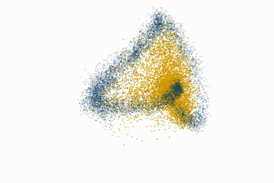

In the absence of this ring, we would be lost in the world.
このリングがなければ、私たちはこの世で途方に暮れてしまうでしょう
本日Nature Neuroscience誌に掲載された研究論文で、MITの神経科学者たちは、マウスの脳内で、環境に関する「高次元」の複雑な情報を、脳内の単純な抽象概念へと変換する回路を特定した。
『覚醒および睡眠を通じた、典型的な認知回路の固有アトラクター多様体と集団ダイナミクス』 (2019)
「外界には角度を示す目盛りがないため、私たちの頭の向きは脳によって抽出、計算、推定される必要があります」と、マクガバン研究所の准研究員であり、この論文の筆頭著者であるイラ・フィエテ氏は説明する。「私たちが用いた手法によって、脳内に低次元の概念、つまり抽象的な羅針盤が出現することを実証することができました。」
研究者らによると、この抽象的な羅針盤は、頭部が外部世界に対して現在向いている方向を表す一次元のリングである。
･･･
これまでのハエの脳の研究で、ハエの頭の方向の変化を表す神経細胞の楕円形の環が物理的に存在することが明らかになっており、
『多様な視覚シーンにおける安定した進行方向表現の生成』 (2019)
研究者たちは、そのようなシステムが哺乳類にも存在するのではないかと推測していた。
今回のマウスを用いた新たな研究で、フィエテ氏らは、マウスが自由に動き回る環境下で、空間ナビゲーションに関与すると考えられている視床前背側核（ADN）にある多数のニューロンの神経活動を数時間にわたって測定した。そして、マウスの頭の向きが変わるにつれて、ADN回路のニューロンがどのように発火するかをマッピングした。
これらのデータポイントが集まると、単純で持続的なリング状の雲が形成された。

「動物は非常に複雑な動作をしているのですが、この回路は、頭の方向を符号化する一次元コンパスに沿って動物の速度を積分することに特化しています」とフィエテ氏は説明します。「状態空間全体を捉える多様体アプローチを用いなければ、この何千ものニューロンからなる回路が、複雑な行動のこの一側面だけを符号化しており、同時に他の変数を符号化していないとは分からないでしょう。」
睡眠中、つまり回路が外部からの情報に晒されていない時でさえ、この回路はまるで過去の頭の向きの軌跡を夢見ているかのように、同じ一次元の円を力強く描き出す。
さらなる分析の結果、このリングは吸引器として機能することが明らかになった。ニューロンが軌道から外れても、すぐに軌道に引き戻され、システムが迅速に修正される。このリングの吸引器特性により、抽象空間における頭部の方向表現は時間的に安定しており、これは周囲の世界に対する頭部の位置感覚を理解し、安定的に維持するために不可欠な条件である。
「このリングがなければ、私たちはこの世で途方に暮れてしまうでしょう」とフィエテは説明する。
･･･
コンパスニューロンとリングアトラクター多様体（マニフォールド）は、動物の脳内における「頭部方向（方位）」の計算と維持を説明する、実体（生物学的基盤）と理論（数理モデル）の関係にあります。
具体的には、コンパスニューロンの集団活動が描く潜在的な状態空間の軌跡（多様体）が、まさに「1次元のリングアトラクター」を形成しています。
理論（リングアトラクター）
方位という「終わりと始まりがつながった連続的な変数（0〜360度）」を脳内で記憶・表現するため、数理システムとして「円環（リング）状に安定した固定点（アトラクター）が連なる多様体」が提唱されていました。
実体（コンパスニューロン）
ショウジョウバエなどの脳（中心複合体）に存在するコンパスニューロン（E-PGニューロンなど）は、物理的にもドーナツ状（楕円体）に配列しています。このニューロン集団の活動の「隆起（バンプ）」が現在の向きを表し、動物が回転するとバンプも円環上を移動します。
コンパスニューロンは数千〜個々の細胞レベルまでノイジーに活動していますが、それら全体の活動パターンを統計的に解析・可視化（トポロジカルデータ解析など）すると、高次元の空間から「きれいな1次元のリング状の形（多様体）」が浮かび上がります。これがリングアトラクター多様体です。
この多様体は「アトラクター（引き込みを伴う構造）」であるため、外部のノイズや一時的な脳の乱れによってニューロンの活動状態がリング（多様体）の軌道から外れそうになっても、回路内の相互作用（局所興奮と広域抑制）によって、瞬時に正しいリング上の軌道へと引き戻される性質を持っています。これにより、暗闇の中や睡眠中であっても、動物は自分の向きを頑健に維持することができます。
(脳内マップ・マッチング･･･)